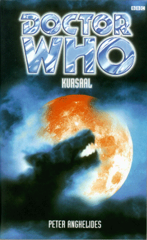

|
Kursaal
|
BASIC PLOT DOCTOR COMPANIONS MATERIALISATION CIRCUIT Pg 179 We're back in roughly the same place, but 15 years later. Pg 276 Back on Kursaal again, and another month has passed. It's not clear if they travelled forwards on time in the TARDIS, or if they just hung around on the planet, but given that Sam speaks of a week of recovery, we'll assume a journey occurred. PREPARATORY READING CONTINUITY REFERENCES Pg 28 "'"I know they place", you said. "Imagine Disneyland meets Babylon 5."'" Interestingly, according to Escape Velocity, the later amnesiac Doctor couldn't get into Babylon 5. Pg 31 "'Well, early seventeenth-century mumbo-jumbo, at an rate,' said the Doctor, sniffing. 'Galileo.'" Presumably The Empire of Glass. "The Doctor said something about Wilson, Kepple and Betty, who, she assumed, had once been his travelling companions." They weren't, of course, but they were the people who invented the quasi-Egyptian 'walking like an Egyptian' sand-dance, some time around 1935. Incidentally, it was condemned as obscene by Josef Goebbels, who, as we all know, was a fine judge of character. Pg 33 "Sit still, Sam, you've had a bot of a shick." This was a dreadful line in The Invisible Enemy, and there is no excuse for its repetition here. Pg 34 "Then he reached into one deep pocket, and brought out [...] a browning apple core." It's probably not the same one that was relevant in Hope, but you never know. "'Everlasting matches,' he said casually." From the novelisation Doctor Who in an exciting adventure with the Daleks. Pg 38 "'When I say run...' began the Doctor in a low tone." The default continuity reference when you can't think of anything else goes back to the time of the Second Doctor. Pg 59 "'I'm just not very keen on hospitals, that's all.' She laughed to break the tension. 'Midwife dropped you on your head as a baby?' she said. 'That would explain a lot.' 'Not exactly,' said the Doctor. 'But I suppose you could call it a birth trauma.'" The Telemovie. Pg 64 "Sam thought of the Tractite she had killed in self-defence. How she had felt. How she had still not been able to tell the Doctor." Genocide, although 'self-defence' would seem to be a mental cover than Sam has created, since it wasn't strictly that if you read the original novel. Pg 68 "Besides, she reflected morosely, she hated running up and down corridors." This is a joke. I hope I don't have to explain it to you. Pg 72 "She patted the pockets, which rattled mysteriously." Alien Bodies gives an explanation of why the Doctor's jacket pockets may sound mysterious when rattled. "'Actually I did take a medical degree,' replied the Doctor smugly. 'Even if it was several lifetimes ago.'" We learned about this in The Moonbase, although it can't have been much good given his medical advice in The Ark. Pg 89 "Even the Doctor had been reluctant to let her use the Volkswagen Beetle, that, impossibly, he had got into the TARDIS." First seen in Vampire Science and destroyed in Unnatural History. Pg 117 "'I remember when I was training for my Mars-Venus shuttle certificate,' said the Doctor, his eyes never leaving the control panel." We heard about this in Robot. Pg 157 "Don't you recognize a werewolf when you see one, Captain?" Strictly speaking, once you know how the Jax virus works, these aren't werewolves at all. But the Doctor doesn't know that right now, and is comparing them to his earlier experience of (very different) werewolves in Wolfsbane. He'll go on to meet yet another different type in Tooth and Claw. Pg 176 "The Doctor gestured grandly upward. 'Pick a star,' he said." He will later say the same thing in The Girl in the Fireplace. Pg 179 "Now he could spot an Alpha Centaurian with a wild expression." From The Curse of Peladon, The Monster of Peladon and Legacy. Pg 186 When bathing, the Doctor wears a baggy, all-in-one, stripey outfit, probably the same one William Hartnell wore in The Space Museum. Pg 188 "'Doctor,' she persisted? 'Does your Information System tell you my future?' He composed his features into what he hoped was a disarming expression - his sincere half-smile, the one that never failed. 'It's full of useless information, and not very well indexed. Besides, I could only afford the abridged version.'" The Doctor's evasiveness here suggests that he knows exactly what Sam's future is, and we find it out for ourselves in The Gallifrey Chronicles. Pg 192 "'My hearts,' he gasped, and dropped back onto the stretcher like a rag doll." The Doctor feigns a heart attack, much as he faked a similar illness in Genocide. Pg 206 "A display was showing the waiting time as 29 minutes." I'm not sure if that seems unreasonable to anyone else, but here in the UK, Accident and Emergency waiting time is usually at least two hours if not considerably longer, so, despite all the complaints of the medics etc., I'd rather be on Kursaal than Earth if I broke my leg. Pg 245 "And I'm half-Alsatian on my mother's side" is probably the silliest reference we will ever get to the Telemovie. Pg 249 "Sam threw her head back, and a haunting howl filled the air." Suddenly I'm thinking of the Master in Survival. Pg 277 "She thought about the Tractite again." And we thought about Genocide again. Pg 278 "You know, for similar reasons, four countries in your time still keep samples of the smallpox virus." This is rather more relevant now, in this time of terrorist paranoia, than it was when this book was written. And it was only two (the US and former USSR), although scarily maybe the Doctor knows something we don't. Then again, um, no one quite knows what happened to the USSR samples, so they may well be in at least three countries. But perhaps not for the reasons the Doctor postulates. Pg 279 "He didn't answer straight away. Then he said, 'I just do my best.'" The Brigadier says something similar in Battlefield. OLD FRIENDS AND OLD ENEMIES NEW FRIENDS AND NEW ENEMIES Bernard Cockaigne is the only member of the main cast to survive, and he does so as a Jax drone. Which is, if you can find the Epilogue, bizarrely hidden after the acknowledgments, about to be unfortunate for Mrs DuPre. Mrs DuPre, but I suspect that she will not last more than a couple of minutes after you shut the book. Various members of the Kursaal security squad in two timezones including Sergeant Mallaby, Officer Huan Qua, Sergeant Porlock, Officer Vereker and Officer Dmowski. Other cameos from: Doctor Webber, Claire Johnson, Tarbogev, Denis Lambton, Nurse Malone, Dr Josef Brandt and Mrs Coppington.
CONTINUITY COCK-UPS PLUGGING THE HOLES [Fan-wank theorizing of how to fix continuity cock-ups] FEATURED ALIEN RACES Zaturday is a Fodoran, basically humanoid, with blue skin and yellow hair. Ermayans are basically humanoid, with wrinkled ears and noses, while Brascans are hermaphroditic creatures looking like orangutans in a boiler suit. Haxalians have forehead antennae, Caballans have horselike nostrils, ears and hooves and are, presumably, fairly horselike in general. Geomydes, meanwhile, resemble chipmunks, with fluffy cheek-pouches. Angorans have pink, fluffy hair, but then, so do some of my friends. Some Ogrons appear. And then they get blown up. And let's have a cheer for our old friends from the race of Alpha Centauri, who still look like a penis. FEATURED LOCATIONS On Pg 179, we travel forward 15 years, but to the same place. We visit various sections of the theme park, particularly the Jax History ride, the Cathedral again, as well as Cockaigne's apartment. IN SUMMARY - Anthony Wilson |
|
 |